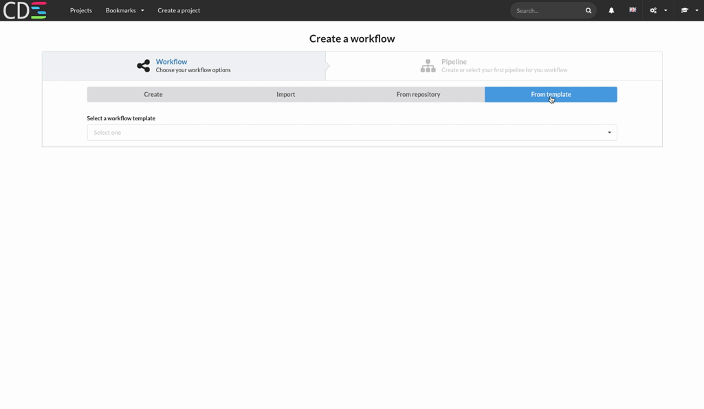

Enterprise-Grade Continuous Delivery & DevOps Automation Open Source Platform

Built with user empowerment in mind
Self-service culture everywhere
CDS has been designed to be used by thousands of projects simultaneously and independently. Project stakeholders are free to decide how to build, test and deploy their software. CDS guarantees project isolation and worker scalability.

Designed to grow with your needs
Horizontal scalability in its DNA
Need thousands of simultaneous workers to do the job? fear not! CDS will manage that for you! CDS servers are stateless. No shared state. Need more power? just add more servers.

Best practices friendly
Assists you in your quest toward Continuous Delivery/Deployment
We love the ideas behind Continuous Delivery and we've created a tool that makes the right things easy to do. Build reproducibility, artifact management, feedback loops, etc. are at your fingertips.

Microservices' best friend
Build similar projects with the same workflow
The built-in don't-repeat-yourself features help you minimize your effort when you need to build, test and deploy hundreds (thousands?) of projects with a similar workflow. This is especially useful when you are managing a micro-services-based infrastructure.

Highly automatable
Full featured RESTful API
CDS can be fully operated through its RESTful API. The API is used by the CDS's UI but also by the workers. All components speak the same language.

Cloud native
Spawn on-demand VMs and containers in the cloud
Unleash the power of the cloud by spawning as much OpenStack and Docker workers as you need.

Built-in security
Fine-grained ACLs at every step
In CDS, read and right access can be finely tuned to suit your needs. You can control who can view, edit, build, deploy in staging or deploy in prod.

Easily customizable
Make it yours through plug-ins and actions
You feel like something is missing in CDS ? Just add it.

Clearly visualize your workflow
CDS provides a super intuitive UI that allows you to build complex workflows, run them and dig into the logs when needed.

Testing data at your fingertips
CDS parses the Junit files produced by your build and displays them in a friendly manner to help you analyse what went wrong.

We welcome all contributions
CDS is open-source and completely free.